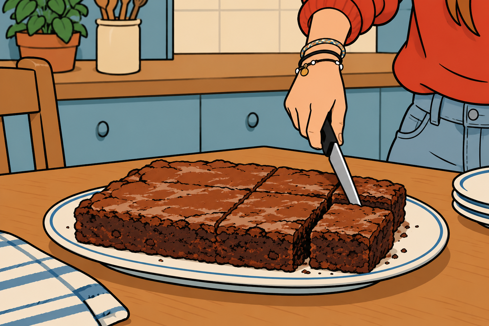

This is a classic dessert I loved as a kid. I was introduced to it by my French uncle, who used to make it every time my brother and I came to visit him and my aunt during the holidays. It was one of those desserts that became part of our visits, and I always looked forward to seeing it on the table. At the time, I never paid much attention to how it was made—I was simply happy to eat it!
When I was around 17, I finally decided to learn how to make it myself. My uncle showed me the recipe, and I started making it at home whenever I had the chance. It didn't take long before it became one of my favourite desserts to prepare. I also started making it for my friends, who quickly became just as fond of it as I was. Even now, whenever I make this cake, it brings back memories of those holidays and the time when I was first learning my way around the kitchen.
Voilà!